JavaScript
基础语法¶
- 变量声明：
let - 常量声明：
const
模板字符串
- ``反引号包裹
- 内部用
${}包住变量
类型转换
Number()parseInt()parseFloat()
生命周期函数/立即执行函数：
(function (){
//function body
})();//加分号
!function (){}()
+function (){}()
~function (){}()
!(function (){})()
(function (形参){function body}(实参));
对象：
let person={
name: 'andy',
sayHi: function(){
document.write('hi~~~~')
},
song:......
}
//调用
person.sayHi()
- 对象类型是浅拷贝
控制语句¶
- 支持
if, else, switch, case, while, do, for，其用法和 C/C++ 语言几乎完全一致 - 还支持类似Python的迭代方法
for ... in¶
-
for...in语句以**任意顺序**迭代一个对象的除symbol以外的**可枚举**属性，包括继承的可枚举属性。 -
可以遍历对象的键值
for ... of¶
- 循环在可迭代对象（如
Array、Map、Set、String，自己创建可迭代对象可以参考迭代协议）上创建迭代循环，最常见的是对数组元素进行迭代 - 遍历数组
异常处理¶
JavaScript 的异常处理与 C++ 相似：
try {
someDangerousFunction();
} catch (err) {
console.log('error occurred');
}
函数¶
我们一般把 JavaScript 的函数也认为是一种变量，因为在 JavaScript 之中，函数的行为很大程度上和变量类似。
arguments是参数的数组
function sum() {
let s = 0;
for (let i = 0; i < arguments.length; ++i) s += arguments[i];
return s;
}
console.log(sum(1, 2, 3)); // 6
自调用函数¶
(function () {
var x = "Hello!!"; // 我将调用自己
})();
匿名函数¶
- 匿名函数的
this: 匿名函数最经典的总结：就是谁调用匿名函数，匿名函数中的this就指向谁 - 匿名函数是有执行上下文，只是执行上下文是执行的时候传递过来，
- 箭头函数中的执行上下文是父级的执行上下文，匿名函数可以作为箭头函数的父级（详见例3）
箭头函数¶
实际上箭头函数的设计很大程度上是为了解决 this 问题。
(参数1, 参数2, …, 参数N) => { 函数声明 }
(参数1, 参数2, …, 参数N) => 表达式(单一)
// 相当于：(参数1, 参数2, …, 参数N) =>{ return 表达式; }
当只有一个参数时，圆括号是可选的：
(单一参数) => {函数声明}
单一参数 => {函数声明}
没有参数的函数应该写成一对圆括号:
() => {函数声明}
如果想返回一个对象，应该在函数体外面套一层小括号，防止解析错误
const fn = (num) => ({num: num})
箭头函数不会创建自己的this,它只会从自己的作用域链的上一层沿用this。
箭头函数和
function函数最大不同的地方是其this的指向跟随上下文的this，也就是说其本身不具有this，在箭头函数体里使用的this实际上是其上下文（一般是其所在的函数作用域）的this。换句话说，箭头函数的this在定义的时候就完成了绑定，这样的性质就解决了this指向不明的问题。
const foo = () => console.log(this);
foo(); // window
// Changing caller will not change 'this'
let obj = { foo: foo, };
obj.foo(); // window
// 'call' & 'bind' may fail
foo.call(obj); // window
foo = foo.bind(obj);
foo(); // window
在全局环境下设定的箭头函数的 this 永远跟随全局环境指向全局对象
回调模式¶
这个函数现在传进去但暂且不调用，需要的时候再调用
- 遍历数组的操作
forEach
[1, 2, 3, 4].forEach(function (val, ind) {
console.log(`The elem with index ${ind} is ${val}.\n`);
});
- 数组的映射函数
map
[1, 2, 3, 4].map(function (val) {
return 2 * val;
}); // [2, 4, 6, 8]
-
数组的筛选方法
filter -
创建一个新的数组，新数组中的元素是通过检查指定数组中符合条件的所有元素
闭包¶
-
概念：一个函数对周围状态的引用捆绑在一起，内层函数中访问到其外层函数的作用域
-
简单理解：闭包 = 内层函数 + 外层函数的变量
-
作用：外部能够访问函数内部的变量
-
原因：引用的变量不会被GC立即释放（引用变量还能找到，所以不能释放）
-
弊端：内存泄漏
-
类比：
-
外层函数 → 类
- 内层函数 → 方法
- 引用变量 → public型数据，类所公有
function outer() {
let i = 1;
function one() {
i++;
console.log(i);
}
function two() {
i++;
console.log(i);
}
return [one, two];
}
const [one, two] = outer();
one(); // 2
one(); // 3
two(); // 4
function lazy_sum(arr) {
let sum = function () {
return arr.reduce(function (x, y) {
return x + y;
});
}
return sum;
}
当我们调用lazy_sum()时，返回的并不是求和结果，而是求和函数：
var f = lazy_sum([1, 2, 3, 4, 5]); // function sum()
调用函数f时，才真正计算求和的结果：
f(); // 15
以下参考：清华大学计算机系科协技能引导文档
function getIncreaser(increment) {
return function (x) {
return x + increment;
}
}
const increase5 = getIncreaser(5);
increase5(10); // 15
-
闭包函数用来**创造函数**
-
上面，
getIncreaser会把increment变量包装在其返回的匿名函数之中，这样就形成了一个**闭包**。 -
闭包实际上就是一个函数和对其**周围状态（lexical environment，词法环境）的引用**捆绑在一起。
这里要特别注意的是，闭包的所谓词法环境，指的是创建闭包时的**函数作用域**。
- 比如这样就不会形成闭包
function getCounters() {
let arr = [];
for (let i = 0; i < 3; ++i) {
arr.push(function () { console.log(i * i); });
}
return arr;
}
let counters = getCounters();
counters[0](); // 0
counters[1](); // 1
counters[2](); // 4
- 这样就会形成闭包
function getCounters() {
let arr = [];
let i;
for (i = 0; i < 3; ++i) {
arr.push(function () { console.log(i * i); });
}
return arr;
}
let counters = getCounters();
counters[0](); // 9
counters[1](); // 9
counters[2](); // 9
- 原因：变量的作用域不同。第一个变量
i的作用域是for语句，第二个是函数作用域。
在闭包捕获变量时，对局部作用域的变量会**复制**，而对函数作用域的变量会**引用**。
因此，通过在 for 语句中使用 let 声明变量，我们声明了局部变量，从而获得了期望的复制捕获行为。
此外需要注意的是，JavaScript 在任何情况下都不会帮你复制**对象**（上面被捕获的 int 是基本值而非对象），如果你的闭包捕获一个对象的值，无论这个对象的作用域如何，都会产生类似问题。事实上，这里并非基本值被特殊地对待，而是对象类型的变量存储的值是到实际对象的引用，因此在捕获时复制的是引用（浅拷贝）而非实际对象（深拷贝）。除非你明确地想要保存一些值，否则在构造闭包时请注意捕获实际的值，而非引用。
面向对象¶
JavaScript 的面向对象的实现逻辑并非是类封装逻辑，而是原型链逻辑。最初的 JavaScript 并不支持类语法，但由于原型链实在太过于特立独行，目前 ES6 标准将类语法作为**语法糖**加入了语言标准。这也就是说，JavaScript 的面向对象的底层依然是原型链而非类封装，如果真的想弄明白 JavaScript 的原型链机制，可以查看文档末尾的原型链章节。但对于初学者，我们建议只是用类语法，除非遇到不可解决的 bug，否则不要花时间钻研原型链。
this¶
作者：littleyu 链接：https://www.jianshu.com/p/ad22f8463afb
JS（ES5）里面有三种函数调用形式：
func(p1, p2)
obj.child.method(p1, p2)
func.call(context, p1, p2)
只有第三种才是一般方式，前两种均为语法糖
context相当于python中的self, 是一个默认参数
前两种到第三种的变化方式：
func(p1, p2) 等价于
func.call(undefined, p1, p2)
obj.child.method(p1, p2) 等价于
obj.child.method.call(obj.child, p1, p2)
其中context就是this, 即
- **函数**中，
this为undefined，但被替换为window obj.method()中，this为obj
总结：this 就是 call 的第一个参数
- 严格来说，JavaScript 的
this指向规则只有一条，即this永远指向最近的调用者
function foo() {
console.log(this);
}
foo(); // window
let obj = { foo: foo, };
obj.foo(); // { foo: foo }
这里两次调用的都是同一个 foo 函数，不同的是前者是全局调用（即直接调用），而后者是把函数作为一个对象 obj 的属性后通过 obj 调用。而 this 的指向就是在函数调用的时候确定的。全局调用 foo 函数，那 this 就指向全局对象，通过 obj 调用，那 this 就指向 obj。
事实上 JavaScript 的全局变量都是全局对象的属性，每一个 JavaScript 运行环境都有一个全局对象。比如说浏览器的全局对象往往是 window，而 Node.js 的全局变量则是 global。你声明的每一个全局变量都会绑定为全局对象的属性（下述代码在浏览器运行）：
let a = 1;
window.a; // 1
而在全局环境下调用函数 foo()，实际上等价于通过全局对象在调用：
foo();
window.foo();
上述两个语句没有差别。
Class¶
js的类是个语法糖
function Pig(_name, _age, _gender) {
this.name = _name;
this.age = _age;
this.gender = _gender;
}
const peppa = new Pig('佩奇', 18, 'female');
console.log(peppa);
// peppa.__proto__ === Pig.prototype
这里使用 new 关键字调用构造函数，这种调用方式就区分了构造函数和普通函数。并且，构造函数内部不用我们再自己构造一个空对象，而是直接使用 this 对象，并且在使用 new 调用的时候，函数会自动将 this 返回。实际上，如果不用 new 关键字调用构造函数也是合法的，这样的话该函数将会作为普通函数执行并返回 undefined。
- 实例成员
- **在构造函数内部声明**的属性和方法被称为实例成员
- 静态成员
- **在构造函数外部添加**的属性和方法被称为静态成员
- **构造函数的属性和方法**被称为静态成员
function Pig(_name, _age, _gender) {
// 这些是实例成员
this.name = _name;
this.age = _age;
this.gender = _gender;
}
// 静态成员
Pig.eyes = 2;
Pig.arms = 2;
Pig.walk = function () {
console.log("walk");
}
内置构造函数¶
Object¶
是内置的构造函数，用于创建普通对象
const obj = new Object({name: '张三', age: '18'});
静态方法：
Object.keys(obj)：获取obj的所有键，返回一个数组Object.values(obj)：获取obj的所有值，返回一个数组Object.entries(obj)：获取键值对，是一个嵌套的数组Object.fromEntries(array)：根据键值对数组，构造对象并返回Object.assign(oo, o)：把o拷贝给oo
Array¶
https://zh.javascript.info/array-methods
实例方法：
| 方法 | 作用 | 说明 |
|---|---|---|
| forEach | 遍历数组 | 不返回，用于只读值，经常用于查找打印输出值（仅遍历，只读） |
| filter | 过滤数组 | 筛选数组元素，并生成新数组（筛选元素） |
| map | 迭代数组 | 返回新数组，新数组里面的元素时处理之后的值，经常用于处理数据（遍历并生成新数组） |
| reduce | 累积器 | 返回函数累计处理的结果，经常用于求和（遍历数组，返回一个值） |
reduce
-
js arr.reduce(function(累计值， 当前元素 [，索引号][，原数组]){}, 起始值) -
如果有起始值，则以起始值为准开始累计， 累计值 = 起始值
-
如果没有起始值， 则累计值以数组的第一个数组元素作为起始值开始累计
-
后面每次遍历就会用后面的数组元素 累计到 累计值 里面 （类似求和里面的 sum
其他实例方法：
-
实例方法
join数组元素拼接为字符串，返回字符串(重点) -
实例方法
find(funciton)查找元素， 返回符合测试条件的第一个数组元素值，如果没有符合条件的则返回 undefined(重点)
findIndex(function)：类似上者，返回下标
-
实例方法
every检测数组所有元素是否都符合指定条件，如果**所有元素**都通过检测返回 true，否则返回 false(重点) -
实例方法
some检测数组中的元素是否满足指定条件 **如果数组中有**元素满足条件返回 true，否则返回 false -
实例方法
concat合并两个数组，返回生成新数组 -
实例方法
sort(function)对原数组单元值排序
// 降序
arr.sort((a,b)=>b-a)
-
实例方法
splice(start[, deleteCount, elem1, ..., elemN])删除或替换原数组单元 -
实例方法
reverse反转数组 -
实例方法
findIndex(item=> item.id===target)查找元素的索引值 -
indexOf(target)：元素下标，使用的是=== -
includes()：是否包含元素 -
push在末端添加一个元素，pop在末端移除元素unshift在首端添加元素，shift取出队列首端的一个元素，整个队列往前移，这样原先排第二的元素现在排在了第一。
-
indexOf(item, from) lastIndexOf 和 includes -
at()相当于索引，但接受负数
静态方法
from把伪数组转换为真数组：Array.from(list)返回真数组isArray：Array基于Object，使用typeof会返回Object
String¶
https://zh.javascript.info/string
-
实例属性
length用来获取字符串的度长(重点) -
实例方法
split('分隔符')用来将字符串拆分成数组(重点) -
实例方法
substring（需要截取的第一个字符的索引[,结束的索引号]）用于字符串截取(重点) -
实例方法
includes(搜索的字符串[, 检测位置索引号])判断一个字符串是否包含在另一个字符串中，根据情况返回 true 或 false(重点) -
实例方法
toUpperCase用于将字母转换成大写，toLowerCase用于将就转换成小写 -
indexOf(subStr[, pos])返回子字符串开始位置，从pos开始检测，找不到就返回-1。
lastIndexOf(substr, position)，倒着检测
startsWith是否以某字符串开始
endsWith 检测是否以某字符结尾
-
实例方法
replace用于替换字符串，支持正则匹配 -
实例方法
match用于查找字符串，支持正则匹配 -
padding：填充'x'.padStart(4, 'ab'); //'abax' 'x'.padEnd(5, 'ab'); //'xabab' -
str.repeat(num)把一个字符串重复num次
注：String 也可以当做普通函数使用，这时它的作用是强制转换成字符串数据类型。
分割方法¶
字符串（返回新字符串）：
slice(start [, end])接受负值substring(start [, end])负值被视为0-
substr(start [, length])接收负值，第二个参数是长度 -
split(target)：按照target分割字符串
数组：
arr.slice([start], [end])切片，支持负数，不改变原数组arr.splice(start[, deleteCount, elem1, ..., elemN])，删除后添加，支持负数，修改了原数组,返回删除的部分
Number¶
- 实例方法
toFixed用于设置保留小数位的长度：num.toFixed(2)
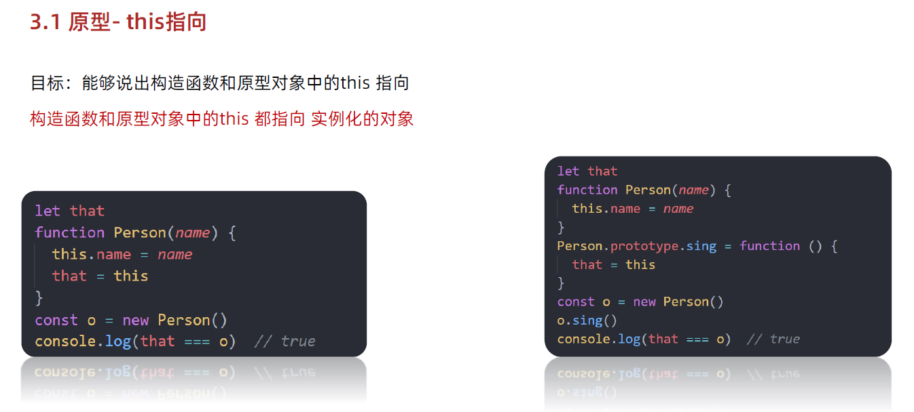
Function¶
实例方法：
toString：得到函数的字符串，保留空白字符
Map¶
https://zh.javascript.info/map-set
对象只允许字符串和Symbol作为键，map允许任何类型的键（key），包括对象
- 保留了插入时的顺序（object没有这个特性）
API:
new Map()—— 创建 map。
let recipeMap = new Map([
['cucumber', 500],
['tomatoes', 350],
['onion', 50]
]);
- 也可以由普通对象创建：因为
Object.entries(obj)返回了一个二维数组
let obj = {
name: "John",
age: 30
};
let map = new Map(Object.entries(obj));
// Object.entries 返回键/值对数组：[ ["name","John"], ["age", 30] ]
alert( map.get('name') );
- 相反，从map创建对象：
Object.fromEntries();可以由二维数组得到对象
let map = new Map();
map.set('banana', 1);
map.set('orange', 2);
map.set('meat', 4);
let obj = Object.fromEntries(map.entries()); // 创建一个普通对象（plain object）(*)
// 简写：
let obj = Object.fromEntries(map); // 省掉 .entries()
// 完成了！
// obj = { banana: 1, orange: 2, meat: 4 }
alert(obj.orange); // 2
-
map.set(key, value)—— 根据键存储值。 -
map.get(key)—— 根据键来返回值，如果map中不存在对应的key，则返回undefined。 -
map.has(key)—— 如果key存在则返回true，否则返回false。 -
map.delete(key)—— 删除指定键的值。 -
map.clear()—— 清空 map。 -
map.size—— 返回当前元素个数。
每一次 map.set 调用都会返回 map 本身，所以我们可以进行“链式”调用：
map.set('1', 'str1')
.set(1, 'num1')
.set(true, 'bool1');
迭代：
-
map.keys()—— 所有键的可迭代对象， -
map.values()—— 所有值的可迭代对象， -
map.entries()——所有实体[key, value]的可迭代对象，for..of在默认情况下使用的就是这个。
for (let entry of recipeMap) { // 与 recipeMap.entries() 相同
alert(entry); // cucumber,500 (and so on)
}
Set¶
Set 是一个特殊的类型集合 —— “值的集合”（没有键），它的每一个值只能出现一次。
API:
new Set(iterable)—— 创建一个set，如果提供了一个iterable对象（通常是数组），将会从数组里面复制值到set中。set.add(value)—— 添加一个值，返回 set 本身set.delete(value)—— 删除值，如果value在这个方法调用的时候存在则返回true，否则返回false。set.has(value)—— 如果value在 set 中，返回true，否则返回false。set.clear()—— 清空 set。set.size—— 返回元素个数。
forEach 的回调函数有**三个参数**：一个 value，然后是 同一个值 valueAgain，最后是目标对象。这是为了兼容map
set.forEach((value, valueAgain, set) => {
alert(value);
});
Map 中用于迭代的方法在 Set 中也同样支持：
set.keys()—— 遍历并返回一个包含所有值的可迭代对象，set.values()—— 与set.keys()作用相同，这是为了兼容Map，set.entries()—— 遍历并返回一个包含所有的实体[value, value]的可迭代对象，它的存在也是为了兼容Map。
案例：使用Set过滤重复元素
function unique(arr){
return [...new Set(arr)]
}
// 或
function unique(arr) {
return Array.from(new Set(arr));
}
构造函数与原型¶
function Star() {}
const ldh = new Star();
console.log(Star.prototype.constructor === Star);
console.log(ldh.__proto__.constructor === Star);
console.log(ldh.__proto__ === Star.prototype);
-
构造函数通过原型分配的函数是所有对象 所 共享 的 。
-
JavaScript 规定， 每一个构造函数都有一个 prototype 属性 ，指向另一个 对象，所以我们也称为原型对象
-
这个对象可以 挂载函数，对象实例化不会多次创建原型上函数，节约内存
-
我们 可以把那些不变的方法，直接定义在 prototype 对象上，这样 所有对象的实例就可以共享这些方法 。
-
构造函数和原型对象中的 this 都指向 实例化的对象
-
__proto__是对象的，prototype是类的
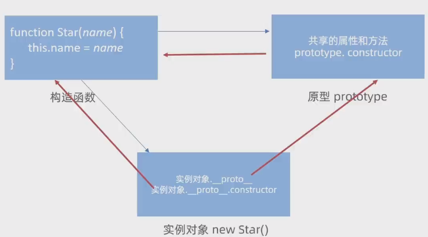
- 原型是什么
- 一个对象，我们也称为 prototype 为 原型对象
- 原型的作用是什么
- 共享方法 可以把那些不变的方法，直接定义在 prototype 对象上
- 构造函数和原型里面的 this 指向谁
- 实例化的对象
对象原型¶
对象都会有一个属性__proto__指向构造函数的 prototype 原型对象，之所以 我们对象可以使用构造函数 prototype
原型对象的属性和方法，就是因为 对象有__proto__原型 的存在。
继承¶
子类的prototype = new Person()
原型链¶
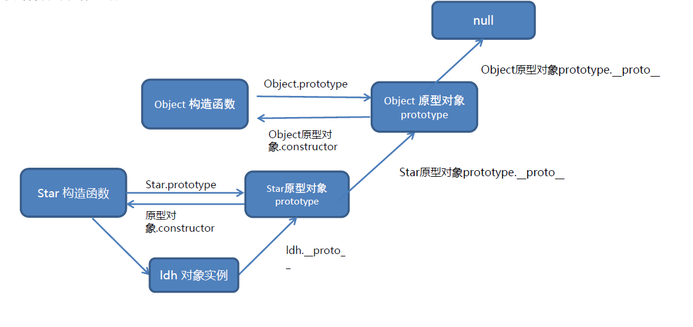
instanceof运算符用于检测构造函数的 prototype 属性是否出现在某个实例对象的原型链上
[1,2,3] instanceof Array
类.prototype === 对象.__proto__
他们指向同一个东西
typeof 和 Object.getPrototypeOf()
- 用途:
typeof用于获取数据的类型，而Object.getPrototypeOf()用于获取对象的原型。 - 返回值:
typeof返回一个表示类型的字符串，Object.getPrototypeOf()返回一个对象（原型对象）。 - 适用性:
typeof对基本数据类型和区分函数与普通对象很有用。Object.getPrototypeOf()专用于对象，用于访问其原型链。
异步¶
参考资料：https://developer.mozilla.org/zh-CN/docs/Learn/JavaScript/Asynchronous/Promises
回调函数¶
事件处理程序是一种特殊类型的回调函数。
而回调函数则是**一个被传递到另一个函数中的会在适当的时候被调用的函数。**
正如我们刚刚所看到的：回调函数曾经是 JavaScript 中实现异步函数的主要方式。
同步任务：都在主线程上执行，形成一个执行栈
异步任务：由回调函数实现，如时间、加载、定时器。
先执行同步，把异步放入队列中。同步执行完再执行异步
在详细叙述这个机制之前，我们首先需要重新认识一下回调函数。当主线程派遣出一个异步过程，比如说触发了网络请求，一般而言需要设定一个这个异步过程的回调函数。这个回调函数描述的，是这个异步过程执行完毕后需要做的事情。
需要定义这个回调函数的原因也很简单，主线程没有办法了解到异步过程何时才能结束，甚至并不清楚这个过程能否结束。在这样的情况下，主线程完全不能知晓什么时候做这个异步过程的善后工作（比如说从网络获取数据后，主线程应该把这些数据加载到页面上）。那么不如定义一个回调函数，具体什么时候调用，根据异步过程来确定。
回到事件循环和消息队列。JavaScript 的主线程上会有一个死循环，称为**事件循环**。其执行逻辑为在空闲的时候不断检查消息队列是否有消息，如果有，则执行，如果没有，则等待。而空闲的含义是当前函数栈空。
而需要异步执行的代码则会负载一个回调函数，当异步过程执行完毕后，则会把回调函数放入消息队列末尾。当主线程空闲且检测到消息队列之中有回调函数的时候，主线程就会执行回调函数，做好异步过程的善后工作。
通过这样的机制，JavaScript 依然是单线程的，对文档树的操作依然是同步的、不会出现冲突的。但依靠这个机制，JavaScript 实现了异步。
Promise¶
new Promise((resolve, reject) => {
let asyncSucceeded = Math.random() > 0.2;
setTimeout(() => {
if (asyncSucceeded) {
resolve("Async succeeded!");
} else {
reject("Async failed!");
}
}, 1000);
})
.then((res) => {
console.log("Then");
console.log(res);
})
.catch((err) => {
console.log("Catch");
console.log(err);
});
其构造函数接受一个回调函数，这个回调函数的两个参数是另外的两个回调函数。
resolve代表异步成功的回调函数，reject代表异步失败的回调函数。- 而构造函数接受的回调函数的函数体则是需要执行的耗时操作。
Promise 比直接写回调模式优越的地方就是这种写法解决了回调地狱。我们依然考虑依次获取多数据源数据的业务场景，由于 then 方法依然返回 Promise 对象，所以实际上我们可以在 then 后面接着调用 then。而上一个 then 之中的回调函数的返回值会被传入下一个 then 之中的回调函数的第一个参数：
new Promise((resolve, reject) => {
// Get Data #1
resolve("Data #1");
})
.then((res) => {
console.log(res);
// Get Data #2
return "Data #2";
})
.then((res) => {
console.log(res);
// Get Data #3
return "Data #3";
})
.then(console.log)
.catch(console.log);
这种写法被称为 then 链，其好处是比回调函数写法更易读且易维护
另外，对于多依赖问题（需要多个异步全部结束后才能派遣下一个异步），Promise 提供了 all 方法：
Promise.all(
[1, 2, 3].map((val) => {
return new Promise((resolve, reject) => {
resolve(`Promise #${val}`);
});
})
)
.then((res) => {
console.log(res); // ["Promise #1", "Promise #2", "Promise #3"]
})
.catch((err) => {});
这里 then 之中的回调函数接受的参数是所有 Promise 对象 resolve 回调所接受的参数拼成的数组，catch 同理。
另外，注意两点：
Promise一旦创建，内部的异步过程就开始执行，且开始执行后就不会取消- 创建
Promise会写很多很长的回调，写完这些回调后很容易给编写者一种“异步已经执行结束”的错觉。实际上这么长的语句仅仅是**定义了Promise对象**，也就是仅仅只是派遣了异步。
样例展示：
const incantations = "芝麻开门";
function init(el) {
document.querySelector(".wrapper .btn").addEventListener("click", () => {
mPrompt()
.then((res) => {
if (res === incantations) {
document
.querySelectorAll("#door .doors")[0]
.classList.add("door-left");
document
.querySelectorAll("#door .doors")[1]
.classList.add("door-right");
}
})
.catch((err) => {
console.log(err);
});
});
}
function mPrompt() {
return new Promise((res, rej) => {
document.querySelector('#confirm').addEventListener('click', () => {
let input = document.querySelector(".message-body input").value;
res(input);
document.querySelector(".modal").remove();
})
document.querySelector('#cancel').addEventListener('click', () => {
rej(false);
document.querySelector(".modal").remove();
})
})
}
// 原理：
function myPromise(){
return new Promise((res, rej) => {
// 处理处理
// 阿巴阿巴
// 处理成功：
res(a ba a ba);//调用then中传入的函数
// 处理失败
rej(err); //调用catch中传入的函数
})
}
myPromise()
.then((a ba a ba)=>{
// 阿巴阿巴
// 这个就是res函数
})
.catch(()=>{
});
// 或者：
function a(){};
function b(){};
myPromise().then(a).catch(b);
const fetchPromise = fetch('bad-scheme://mdn.github.io/learning-area/javascript/apis/fetching-data/can-store/products.json');
fetchPromise
.then( response => {
if (!response.ok) {
throw new Error(`HTTP 请求错误：${response.status}`);
}
return response.json();
})
.then( json => {
console.log(json[0].name);
})
.catch( error => {
console.error(`无法获取产品列表：${error}`);
});
Promise 对象的构造器（constructor）语法如下：
let promise = new Promise(function(resolve, reject) {
// executor（生产者代码，“歌手”）
resolve(aaa)
});
传递给 new Promise 的函数被称为 executor。当 new Promise 被创建，executor 会自动运行。
是成功还是失败，由写的代码决定：
- 调用了
resolve，就是成功 - 调用了
reject，就是失败
await promise的返回值是aaa
Promise 的三种状态：
- 待定（pending）：初始状态，既没有被兑现，也没有被拒绝。这是调用
fetch()返回 Promise 时的状态，此时请求还在进行中。 - 已兑现（fulfilled）：意味着操作成功完成。当 Promise 完成时，它的
then()处理函数被调用。 - 已拒绝（rejected）：意味着操作失败。当一个 Promise 失败时，它的
catch()处理函数被调用。 - 已敲定（settled）: 这个词来同时表示 已兑现（fulfilled） 和 已拒绝（rejected） 两种情况。
promise传进去的函数会在遇到.then的时候执行
// 1. 创建Promise对象-模拟请求省份名字
const p = new Promise((resolve, reject) => {
setTimeout(() => {
resolve('北京市')
}, 2000)
})
// 2. 获取省份名字
const p2 = p.then(result => {
console.log(result)
// 3. 创建Promise对象-模拟请求城市名字
// return Promise对象最终状态和结果，影响到新的Promise对象
return new Promise((resolve, reject) => {
setTimeout(() => {
resolve(result + '--- 北京')
}, 2000)
})
})
执行到第9行的时候才会打印出北京市
解决回调地狱1¶
手动返回一个Promise对象
/**
* 目标：把回调函数嵌套代码，改成Promise链式调用结构
* 需求：获取默认第一个省，第一个市，第一个地区并展示在下拉菜单中
*/
let pname = ''
// 1. 得到-获取省份Promise对象
axios({url: 'http://hmajax.itheima.net/api/province'}).then(result => {
pname = result.data.list[0]
document.querySelector('.province').innerHTML = pname
// 2. 得到-获取城市Promise对象
return axios({url: 'http://hmajax.itheima.net/api/city', params: { pname }})
}).then(result => {
const cname = result.data.list[0]
document.querySelector('.city').innerHTML = cname
// 3. 得到-获取地区Promise对象
return axios({url: 'http://hmajax.itheima.net/api/area', params: { pname, cname }})
}).then(result => {
console.log(result)
const areaName = result.data.list[0]
document.querySelector('.area').innerHTML = areaName
})
Promise方法¶
Promise.all
合并多个Promise 对象，等待所有 同时成功 完成（或某一个失败），做后续逻辑
// 1. 请求城市天气，得到Promise对象
const bjPromise = axios({ url: 'http://hmajax.itheima.net/api/weather', params: { city: '110100' } })
const shPromise = axios({ url: 'http://hmajax.itheima.net/api/weather', params: { city: '310100' } })
const gzPromise = axios({ url: 'http://hmajax.itheima.net/api/weather', params: { city: '440100' } })
const szPromise = axios({ url: 'http://hmajax.itheima.net/api/weather', params: { city: '440300' } })
// 2. 使用Promise.all，合并多个Promise对象
const p = Promise.all([bjPromise, shPromise, gzPromise, szPromise])
p.then(result => {
// 注意：结果数组顺序和合并时顺序是一致
console.log(result)
const htmlStr = result.map(item => {
return `<li>${item.data.data.area} --- ${item.data.data.weather}</li>`
}).join('')
document.querySelector('.my-ul').innerHTML = htmlStr
}).catch(error => {
console.dir(error)
})
实现Promise.all
let promise1 = new Promise(function (resolve) {
resolve(1);
});
let promise2 = new Promise(function (resolve) {
resolve(2);
});
let promise3 = new Promise(function (resolve) {
resolve(3);
});
Promise.all = async(args) => {
let ans = []
await args.forEach( element => {
element.then((res) => ans.push(res))
});
return ans
}
let promiseAll = Promise.all([promise1, promise2, promise3]);
promiseAll.then(function (res) {
console.log(res);
});
// https://juejin.cn/post/6844903761505173512
function promiseAll(promises) {
return new Promise(function (resolve, reject) {
if (!isArray(promises)) {
return reject(new TypeError('arguments must be an array'));
}
var resolvedCounter = 0;
var promiseNum = promises.length;
var resolvedValues = new Array(promiseNum);
for (var i = 0; i < promiseNum; i++) {
(function (i) {
Promise.resolve(promises[i]).then(function (value) {
resolvedCounter++
resolvedValues[i] = value
if (resolvedCounter == promiseNum) {
return resolve(resolvedValues)
}
}, function (reason) {
return reject(reason)
})
})(i)
}
})
}
Promise.reslove
https://juejin.cn/post/6844903625609707534
该方法返回一个以 value 值解析后的 Promise 对象
- 如果这个值是个 thenable（即带有 then 方法），返回的 Promise 对象会“跟随”这个 thenable 的对象，采用它的最终状态（指 resolved/rejected/pending/settled）
- 如果传入的 value 本身就是 Promise 对象，则该对象作为 Promise.resolve 方法的返回值返回。
- 其他情况以该值为成功状态返回一个 Promise 对象。
//如果传入的 value 本身就是 Promise 对象，则该对象作为 Promise.resolve 方法的返回值返回。
function fn(resolve){
setTimeout(function(){
resolve(123);
},3000);
}
let p0 = new Promise(fn);
let p1 = Promise.resolve(p0);
// 返回为true，返回的 Promise 即是 入参的 Promise 对象。
console.log(p0 === p1);
Promise.race会在任何一个 promise 完成（无论是解决还是拒绝）时完成，
race只管完成（速度）
- 而
Promise.any会在任何一个 promise 解决时解决，或者在所有 promise 都拒绝时拒绝。
any期待解决
async / await¶
async :
-
我们可以用
async关键字将一个函数声明为异步函数。调用异步函数的时候，其会立刻返回并派遣一个异步https://docs.net9.org/languages/javascript/async/#async-await
-
提供了一种更简单的方法来处理基于异步 Promise 的代码。在一个函数的开头添加
async，就可以使其成为一个异步函数。 -
内部同步，外部异步
-
保留异步执行的情况下，不用考虑异步带来的编程困难，以同步的方式编写函数。缺点是以函数为个体
-
使用
try catch进行错误捕获。如果try里某行代码报错后，try中剩余的代码不会执行了
async function myFunction() {
// 这是一个异步函数
}
例如：
async function fetchProducts() {
try {
// 在这一行之后，我们的函数将等待 `fetch()` 调用完成
// 调用 `fetch()` 将返回一个“响应”或抛出一个错误
const response = await fetch('https://mdn.github.io/learning-area/javascript/apis/fetching-data/can-store/products.json');
if (!response.ok) {
throw new Error(`HTTP 请求错误：${response.status}`);
}
// 在这一行之后，我们的函数将等待 `response.json()` 的调用完成
// `response.json()` 调用将返回 JSON 对象或抛出一个错误
const json = await response.json();
console.log(json[0].name);
}
catch(error) {
console.error(`无法获取产品列表：${error}`);
}
}
fetchProducts();
在异步函数中，你可以在调用一个返回 Promise 的函数之前使用 await 关键字。
这使得代码在该点上等待，直到 Promise 被完成，
这时 Promise 的响应被当作返回值，或者被拒绝的响应被作为错误抛出。
这使你能够编写像同步代码一样的异步函数
就像一个 Promise 链一样，await 强制异步操作以串联的方式完成。如果下一个操作的结果取决于上一个操作的结果，这是必要的，但如果不是这样，像 Promise.all() 这样的操作会有更好的性能。
-
await: 它阻止 JavaScript 在解决 promise 之前将fetch赋值给 response 变量。一旦 promise 被解决，现在可以将 fetch 方法的结果分配给 response 变量。 -
await关键字后面可以接一个变量，如果这个变量不是Promise对象，那么await关键字不产生任何效果。如果是
Promise对象，那么await关键字会阻塞代码运行，直到这个Promise对象代表的异步执行完毕。如果异步成功，这个时候
await语句的返回值是Promise的resolve回调接受的参数，无论有没有通过then方法指定resolve回调。如果异步失败，首先确定这个
Promise有没有通过catch方法规定reject回调。如果有，await返回catch之中回调函数的返回值，如果没有，抛出 Uncaught Failure 错误。
事件循环¶
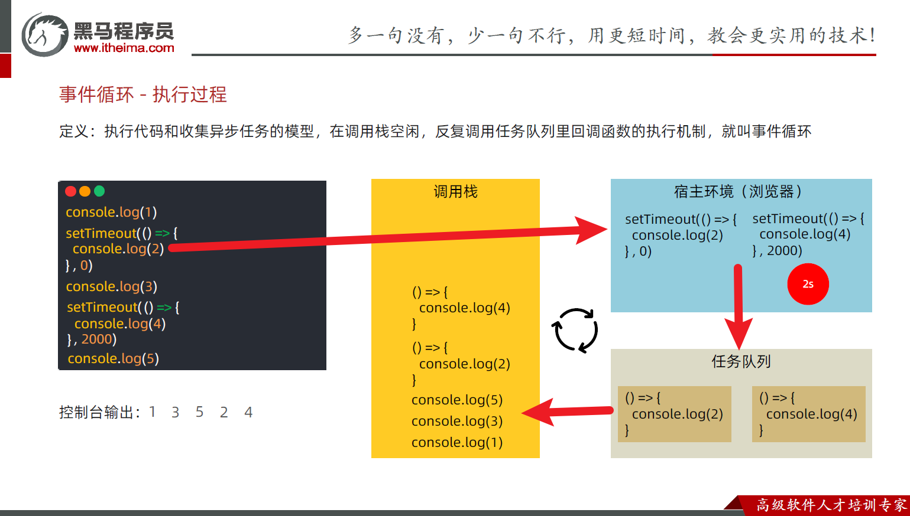
- 调用栈空时，执行任务队列中的代码
宏任务微任务
ES6之后引入了 Promise 对象， 让 JS 引擎也可以发起异步任务 异步任务分为：
- 宏任务：由 浏览器 环境执行的异步代码
- 微任务：由 JS 引擎 环境执行的异步代码，执行时机是在主函数执行结束之后、当前宏任务结束之前
优先调度微任务队列
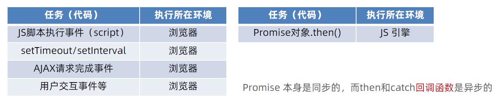
例：
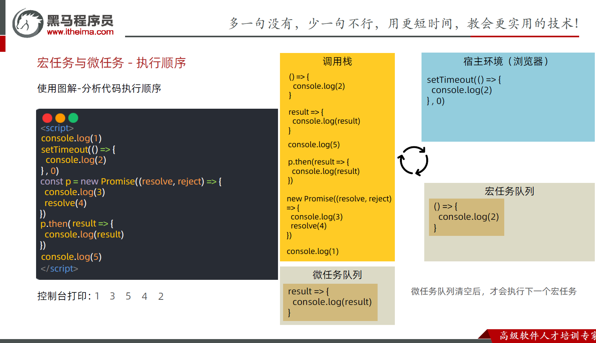
JavaScript内代码如何执行：
- 执行第一个 script 脚本事件宏任务，里面 同步 代码
- 遇到宏任务 微任务 交给宿主环境，有结果回调函数进入对应队列
- 当执行栈空闲时，清空微任务队列，再执行下一个宏任务 ，从 1 再来
Web API¶
基础API¶
- 修改类
const box = document.querySelector('.box')
box.classList.add('active') //添加
box.classList.remove('box') //删除
box.classList.toggle('active') //替换
box.classList.contains('active') //查询
box.className="" // class的字符串
-
js box.style.width 可以当左值，也可以当右值 需要用到驼峰格式 只能操作内联的style -
自定义属性
<div data-id="1" data-spm="不知道">1</div>
console.log(对象.dataset.id)
console.log(对象.dataset.spm)
对象.dataset() //自定义属性的集合
-
所有特性都可以通过使用以下方法进行访问（https://zh.javascript.info/dom-attributes-and-properties）：
-
elem.hasAttribute(name)—— 检查特性是否存在。 elem.getAttribute(name)—— 获取这个特性值。elem.setAttribute(name, value)—— 设置这个特性值。-
elem.removeAttribute(name)—— 移除这个特性。 -
定时器-间歇函数
let n = setInterval(函数名，时间（毫秒）) //返回定时器的编号
clearIntterval(n) //关闭定时器
-
事件监听
-
元素对象.addEventListener('事件类型'，要执行的函数)
-
解绑：元素对象.removeEventListener(事件类型，事件处理函数，【事件捕获或者冒泡阶段】)
-
事件类型
-
鼠标事件（鼠标触发） ：click鼠标点击，mouseenter鼠标经过，mouseleave鼠标离开
- 焦点事件（表单获得光标）：focus获得焦点，blur失去焦点
- 键盘事件（键盘触发） ：keydown键盘按下触发，keyuo键盘抬起触发
-
文本事件（表单输入触发）：input用户输入事件
-
事件对象
// 添加
元素.addEventListener('click', function(event){
//event即为事件对象
})
// 解绑
元素.removeEventListener('click', fn)
// 匿名函数无法解绑
- 事件对象的常用属性：
type：获取当前的事件类型cilentX/ cilentY：获取光标相对于浏览器可见窗口左上角的位置offsetX/ offsetY：获取光标相对于当前DOM元素左上角的位置key：用户按下的前盘键的值e.target.tagName真正触发的元素-
e.target.classList可以获取事件的DOM对象 -
特殊事件
-
DOMContentLoaded：HTML加载完成后触发，添加给documentdocument.addEventListener('DOMContentLoaded', ()=>{}) -
load：外部资源（图片、外联CSS和JavaScript）加载完毕触发的事件，可用于所有元素，一般用于windowswindows.addEventListener('load', ()=>{}) -
js document.documentElement.scrollTo
获取整个HTML对象
-
scrollTop / scrollLeft获取/ 修改整个HTML页面被卷去的距离 -
滚动相关
-
window.scrollX window.scrollY-
window.scrollTo(X, Y) -
函数对象
this：指向调用者 -
捕获和冒泡：默认
false，冒泡 -
大→小：捕获
- 小→大：冒泡
-
阻止事件流动传播（冒泡+捕获）：
事件对象.stopPropagation() -
鼠标经过事件：
-
mouseover和mouseout会有冒泡效果 -
mouseenter和mouseleave没有冒泡效果（推荐） -
点击返回页面顶部
const backTop = document.querySelector('#backTop')
backTop.addEventListener('click', function(){
document.documentElement.scrollTop = 0
//document.documentElement 用于获取html内容
})
-
获取宽高：
-
不包含padding/border:
clientWidth,clientHeight -
包含padding/border:
offsetWidth,offsetHeight -
获取位置：
-
元素距离自己定位父级元素的左、上距离:
offestLeft,offsetTop -
获取位置的另一种：
element.getBoundingClientRect()
// 返回元素的大小及其相对于视口的位置（x, y）

- 日期对象

- 获取时间戳（从1970年到现在的毫秒数）
const date=new Date()
date.getTime()
+new Date()
new Date().toLocalString()
-
内容：
-
innerText不修改子元素，不考虑隐藏元素 textContent修改子元素，考虑隐藏元素，忽略HTML格式innerHTML以HTML形式解析
节点操作¶
-
查找结点
-
父节点，返回最近一级的父结点，找不到返回NULL：
子元素.parentNode-
parentNode: 包括元素节点、文档节点、文档类型节点或者文档片段节点。
-
parentElement: 父元素必须是一个元素节点。如果父节点不是元素节点（例如，如果父节点是文档节点或文档类型节点），那么parentElement会返回null。
下面是一个例子，说明了这两者之间的差异：
// 获取 html 元素 let html = document.documentElement; console.log(html.parentNode); // 输出: #document console.log(html.parentElement); // 输出: null在这个例子中，html 元素的父节点是文档节点，所以
parentNode返回文档节点，而parentElement返回null。 -
-
子节点
childNodes:获得所有子节点、包括文本节点（空格、换行）、注释节点等children属性: 仅获得所有元素节点，返回一个伪数组
-
兄弟节点
- 下一个
previousElementSibling - 上一个
nextElementSibling
- 下一个
-
创建节点
document.createElement('标签名')
-
插入节点
-
插入到这个父元素的最后
父元素.appendChild(要插入的元素) -
插入到父元素的某个子元素之前
父元素.insertBefore(要插入的元素，在哪个元素前面) -
克隆节点
元素.cloneNode(布尔值)
// 布尔值决定是否克隆后代
- 删除结点
父元素.removeChild(要删除的元素)
元素.remove() // 删除自身
windows对象¶
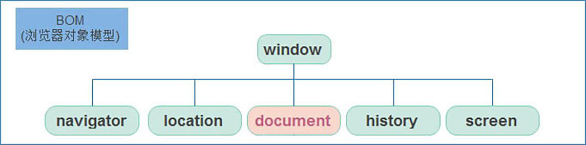
location对象¶
location 的数据类型是对象，它拆分并保存了 URL 地址的各个组成部分
属性：
location.href指定当前页面链接，可读写location.search获取URL参数（?及其后面部分）location.hash获取URL参数（#及其后面部分）
方法：
location.load([true])（ctrl + F5）（强制）刷新
navigator对象¶
记录了浏览器自身的相关信息
通过 userAgent 检测浏览器的版本及平台:
!(function () {
const userAgent = navigator.userAgent
// 验证是否为Android或iPhone
const android = userAgent.match(/(Android);?[\s\/]+([\d.]+)?/)
const iphone = userAgent.match(/(iPhone\sOS)\s([\d_]+)/)
// 如果是Android或iPhone，则跳转至移动站点
if (android || iphone) {
location.href = 'http://m.itcast.cn'
}
})()
history对象¶
对象
history.back()后退history.forward()前进history.go(-1)后退history.go(1)前进
localStorage对象¶
手动清除才会消失
以键值对的形式把数据存储在本地，只能存储字符串，不能存储对象
localStorage.setItem(key, value)localStorage.getItem(key)localStorage.removeItem('key')
复杂数据类型存取：
JSON.stringify(obj)转换为字符串JSON.parse(json)转换为对象
sessionStorage¶
- 生命周期为关闭浏览器窗口，在同一个窗口下数据可以共享
- 以键值对形式存放，用法与
localStorage基本相同
JS高阶¶
深浅 / 拷贝¶
- 浅拷贝：复制地址
- 深拷贝：把值复制一份，拷贝值
实现：
- 数组：
concat，合并两个数组；...运算符 - 对象：
Object.assign(dest, [src1, src2, src3...])；...运算符 但只能深拷贝一层
进一步：
-
递归
-
lodash/cloneDeep库
const newObj = _.cloneDeep(old);
- 通过 JSON.stringify 实现（无法拷贝函数）
const o= JSON.parse(JSON.stringify(obj));
异常处理¶
- try 试试 catch 拦住 finally 最后
- try...catch 用于捕获错误信息
- 将预估可能发生错误的代码写在 try 代码段中
- 如果 try 代码段中出现错误后，会执行 catch 代码段，并截获到 错误信息
- finally 不管是否有错误，都会执行
throw会终止程序throw new Error("出错了！")throw "出错了"
this指向¶
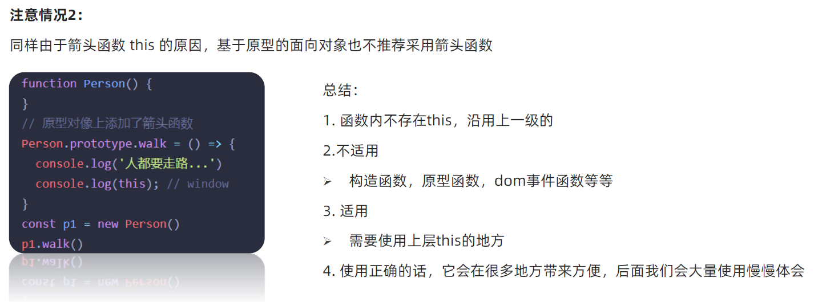
JavaScript 中还允许指定函数中 this 的指向，有 3 个方法可以动态指定普通函数中 this 的 指向
-
call()
-
apply()
-
bind()
-
call()
call 方法调用函数，同时 指定被调用函数 中 this 的值
语法：
fun.call(thisArg, arg1, arg2, ...)
- fun.call(thisArg, arg1, arg2, ...)
- thisArg ：在 fun 函数 运行时指定 的 this 值
- arg1 arg2 ：传递 的其他参数
-
返回 值就是函数的返回值，因为它就是调用 函数
-
apply 方法调用函数，同时 指定被调用函数 中 this 的 值
语法：
fun.apply(thisArg, [argsArray])
- thisArg ：在 fun 函数运行时指定的 this 值
- argsArray ：传递的值，必须包含在 数组 里面
- 返回 值就是函数的返回值，因为它就是调用 函数
-
因此 apply 主要跟数组有关系，比如使用 Math.max() 求数组的最大 值
-
bind() 方法不会调用函数。但是能改变函数内部 this 指向 语法：
fun.bind(thisArg, arg1, arg2, ...)
- thisArg ：在 fun 函数运行时指定的 this 值
- arg1 arg2 ：传递的其他参数
- 返回由指定的 this 值和初始化参数改造的 原函数拷贝 （新函数
- 因此当我们只是想改变 this 指向，并且不想调用这个函数的时候，可以使用 bind 比如改变定时器内部的this 指向
防抖&节流¶
防抖¶
- 防抖：如果在 n 秒内又触发了事件，则会重新计算函数执行时间
使用场景
- 搜索框输入，设定每次输入完毕 n 秒后发送请求，如果期间还有输入，则重新计算时间
实现：
lodash库：设置函数的最短执行间隔
box.addEventListener('mousemove', _.debounce(mouseMove, 500))
模拟：
// 无论晃动多少次，只在最后一次触发
// 只是内层防抖了，外层仍然会高频率执行
const box = document.querySelector(".box");
let i = 0;
function fn() {
box.innerText = i++;
}
function debounce(fn, time) {
let timer;
return function () {
if (timer) clearTimeout(timer);
timer = setTimeout(function () {
fn();
}, time);
};
}
box.addEventListener("mousemove", debounce(fn, 500));
// 事件触发的效果：执行debounce(fn, 50)()这个函数
节流¶
概念：
- 就是指连续触发事件但是在 n 秒中只执行一次函数。比如可以利用节流实现 1s 之内 只能触发一次鼠标移动 事件
使用场景
- 鼠标移动，页面尺寸发生变化，滚动条滚动等开销比较大的情况下
实现：
- 使用
lodash库
box.addEventListener('mousemove', _.throttle(mouseMove, 500))
- 模拟：
const box = document.querySelector(".box");
let i = 0;
function fn() {
box.innerText = i++;
}
function debounce(fn, time) {
let timer=null;
return function () {
if (!timer) {
timer = setTimeout(function () {
fn();
timer=null;
}, time);
}
};
}
box.addEventListener("mousemove", debounce(fn, 500));
记录播放位置案例¶
相关KPI：
ontimeupdate事件 在视频 音频（ audio/video ）当前的播放位置发送改变时 触发
这个函数在音视频播放位置改变时触发，可以给他绑定函数。
-
onloadeddata事件在当前帧的数据加载完成且还没有足够的数据播放视频 音频（ audio/video ）的下一帧时 触发 -
video.currentTime：视频当前时间，可读可写
const video = document.querySelector("video");
video.ontimeupdate = function () {
localStorage.setItem("currentTime", video.currentTime);
};
video.onloadeddata = function () {
video.currentTime = localStorage.getItem("currentTime") || 0;
};
柯里化¶
https://zh.javascript.info/currying-partials
const sum = (a, b, c) => {
return a + b + c
}
function curry(func) {
// 递归函数，返回func的柯里化
return function curried(...args) {
// func.length: JavaScript 中的函数对象有一个 length 属性。
// 这个属性提供了一个函数期望接收的参数个数，也就是在函数定义中声明的参数数量
// 参数已经足够了
if (args.length >= func.length) {
return func.apply(this, args);
} else {
// 参数还是不够，再构造一层函数
return function (...args2) {
return curried.apply(this, args.concat(args2));
}
}
};
}
console.log([sum]);
console.log(curry(sum)(1, 2)(3))
const sumOne= curry(sum)(1)
console.log(sumOne(2,3));
柯里化：将 sum(a, b, c) 转换为 sum(a)(b)(c)
更高级的柯里化：
- 支持部分调用，可以返回一部分函数
杂项¶
JSON¶
| 方法 | 解释 |
|---|---|
| JSON.parse() | 用于将一个 JSON 字符串转换为 JavaScript 对象。 |
| JSON.stringify() | 用于将 JavaScript 值转换为 JSON 字符串。 |
JSON的属性名必须加引号，对象的属性名不需要
Void¶
# 包含了一个位置信息，默认的锚是**#top** 也就是网页的上端。
而javascript:void(0), 仅仅表示一个死链接。
在页面很长的时候会使用 # 来定位页面的具体位置，格式为：# + id。
如果你要定义一个死链接请使用 javascript:void(0) 。
正则表达式¶
构造：/表达式/修饰符
-
js let re = /ab+c/; -
js let re = new RegExp("ab+c");
转义字符：\
特殊字符：
断言：表示一个匹配在某些条件下发生。断言包含先行断言、后行断言和条件表达式。
-
x*前一项x出现零次或多次 -
^匹配输入的开始 -
$匹配输入的结束 -
\b匹配单词边界 -
\B匹配非单词边界 -
先行断言：
x(?=y)x 被 y 跟随时匹配 x -
先行否定断言：
x(?!y)x 没有被 y 紧随时匹配 x -
后行断言：
(?<=y)xx 跟随 y 的情况下匹配 x -
后行否定断言：
(?<!y)xx 不跟随 y 时匹配 x -
选择是正则表达式中的一个术语，实际上是一个简单的“或”。
在正则表达式中，它用竖线 | 表示。
例如，我们想要找出编程语言：HTML、PHP、Java 或 JavaScript。
对应的正则表达式为：html|php|java(script)?。
字符类：区分不同类型的字符，例如区分字母和数字。
[xyz][a-c]: 匹配包含在方括号中的任何字符。可以使用连字符指定字符范围[^xyz][^a-c]: 一个否定或补充的字符类。也就是说，它匹配未包含在方括号中的任何字符.: 匹配**除行终止符之外的任何单个字符**：\n,\r,\u2028or\u2029. 例如，/.y/在“yes make my day”中匹配“my”和“ay”，而不是“yes”。\d: 数字 相当于[0-9]\D: 非数 相当于[^0-9]\w: 字母 数字 下划线 相当于[A-Za-z0-9_]\W: 非\w\s: 单个空白字符，包括空格、制表符、换页符、换行符和其他 Unicode 空格。相当于[\f\n\r\t\v\u0020\u00a0\u1680\u2000-\u200a\u2028\u2029\u202f\u205f\u3000\ufeff]\S
组和范围：表示表达式字符的分组和范围。
(x): **捕获组：**匹配 x 并记住匹配项。例如，/(foo)/匹配并记住“foo bar”中的“foo”(?:x): 仅分组，不记住\n: 其中 n 是一个正整数。对正则表达式中与 n 括号匹配的最后一个子字符串的反向引用 (计算左括号)
量词：表示匹配的字符或表达式的数量
x+:x出现一次或多次x?:x出现一次或零次x{n}:x出现n次x{n,}:x至少出现n次x{n,m}:x出现n~m次
默认情况下，像
*和+这样的量词是“贪婪的”，这意味着它们试图匹配尽可能多的字符串。?量词后面的字符使量词“非贪婪”：意思是它一旦找到匹配就会停止。例如，给定一个字符串“something”: new
/<.*>/will match "" new /<.*?>/will match ""
修饰符：
- i 使用此修饰符后，搜索时不区分大小写：
A和a之间没有区别（请参见下面的示例）。 - g 使用此修饰符后，搜索时会寻找所有的匹配项 —— 没有它，则仅返回第一个匹配项。
- m 多行模式（详见 锚点 ^ $ 的多行模式，修饰符 "m"）。
- s 启用 “dotall” 模式，允许点
.匹配换行符\n（在 字符类 中有详细介绍）。 - u 开启完整的 Unicode 支持。该修饰符能够正确处理代理对。详见 Unicode：修饰符 "u" 和类 \p{...}。
- y 粘滞模式，在文本中的确切位置搜索（详见 粘性修饰符 "y"，在位置处搜索）
方法：
-
搜索：
str.match(regexp)方法在字符串str中寻找regexp的匹配项。 -
搜索不到时返回
null -
搜索全部还是贪婪，取决于参数
-
替换：
str.replace(str|regexp, str|func)方法使用replacement替换在字符串str中找到的regexp的匹配项：
（如果带有修饰符 g 则替换所有匹配项，否则只替换第一个）。
第二个参数是字符串 replacement。我们可以在其中使用特殊的字符组合来对匹配项进行插入：
| 符号 | 在替换字符串中的行为 |
|---|---|
$& |
插入整个匹配项 |
$ |
插入字符串中匹配项之前的字符串部分 |
$' |
插入字符串中匹配项之后的字符串部分 |
$n |
如果 n 是一个 1-2 位的数字，则插入第 n 个分组的内容，详见 捕获组 |
$<name> |
插入带有给定 name 的括号内的内容，详见 捕获组 |
$$ |
插入字符 $ |
- 搜索：
str.search( /ink/i )
let str = "A drop of Ink may make a million think";
alert( str.search( /ink/i ) ); // 10（第一个匹配位置）
-
测试:
regexp.test(str)方法寻找至少一个匹配项，如果找到了，则返回true，否则返回false。 -
检索：
regObj.exec(被检测字符串)
成功：返回一个匹配信息的数组；失败：返回null\
-
如果没有修饰符
g，则与str.match(reg)相同 -
如果有修饰符
g，第一次调用reg.exec(str)会返回第一个匹配项，-
并将紧随其后的位置保存在属性
regexp.lastIndex中。 -
下一次这样的调用会从位置
regexp.lastIndex开始搜索，返回下一个匹配项，并将其后的位置保存在regexp.lastIndex中。
-
例：
number.replace(/(\d{3})\d{4}(\d{4})/, '\$1****\$2')手机号中间四位置为*/([01]\d|2[0-3]):[0-5]\d/g匹配hh:mm这样的时间
模块¶
来源：https://es6.ruanyifeng.com/#docs/module
export: 规定模块的对外接口import: 输入 其他模块提供的功能
export¶
别名
export{
原名1 as 别名1,
原名2 as 别名2,
原名2 as 别名3,
}
// 一个原名可以有多个别名
提供接口而不是值：
let m = 1;
export m; // 报错
没有提供对外接口
export let m = 1;
let m = 1;
export {m};
let n = 1;
export {n as m}; // 正确
在接口名与模块内部变量之间，建立了一一对应的关系
export输出的接口，与对应的值是动态绑定的关系
import¶
import {接口名} from '其他模块'
接口名必须与其他被导入模块的对外接口名相同
接口的值不允许更改，只读
整体加载
import * as circle from './circle'
console.log(circle.area(4));
console.log(circle.circumference(4));
export default¶
export default function area(){}
// 相当于
export default=function area(){}
import anyName from 'area';
- 不需要大括号
- 不用和输出一致
正是因为export default命令其实只是输出一个叫做default的变量，所以它后面不能跟变量声明语句。
// 正确
export var a = 1;
// 正确
var a = 1;
export default a;
// 错误
export default var a = 1;
上面代码中，export default a的含义是将变量a的值赋给变量default。所以，最后一种写法会报错。
同样地，因为export default命令的本质是将后面的值，赋给default变量，所以可以直接将一个值写在export default之后。
// 正确
export default 42;
// 报错
export 42;
export 与 import 的复合写法¶
如果在一个模块之中，先输入后输出同一个模块，import语句可以与export语句写在一起。
export { foo, bar } from 'my_module';
// 可以简单理解为
import { foo, bar } from 'my_module';
export { foo, bar };
垃圾回收¶
-
引用计数法
-
思想：如果**内存不再使用**，则清除
- 实现：看一个对象是否有指向它的引用，没有引用了就回收对象
-
弊端：嵌套引用
-
标志清除法
-
思想：将“不再使用的对象”定义为“无法达到的对象”
-
实现：就是从根部（在JS中就是全局对象）出发定时扫描内存中的对象。 凡是能从根部到达的对象，都是还需要使用的。
那些无法由根部出发触及到的对象被标记为不再使用，稍后进行回收。
解构赋值¶
-
数组解构
-
将数组的单元值快速批量赋值给一系列变量的简洁语法
- 以位置为准
[a, b] = [b, a]- 可以设置默认值
[a, b, c=1] = [2,3]，当右边为undefined时生效 -
按需导入，忽略一些值：
[a, , b, c] = [1, 000000, 2, 3] -
对象解构
-
重命名：
const user = { name: '小明', age: 18, }; const { name: uname, age } = user; uname // 小明 age // 18 -
以相同的属性名和变量名为准
TypeScript¶
字节青训营
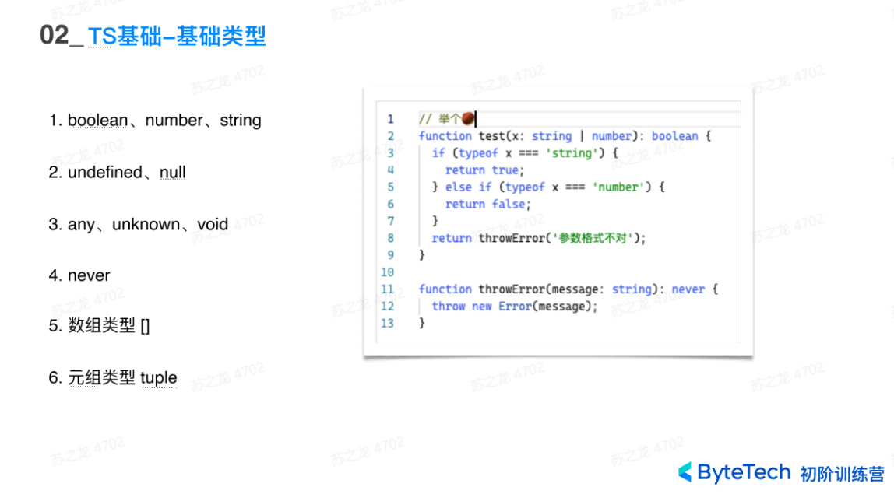
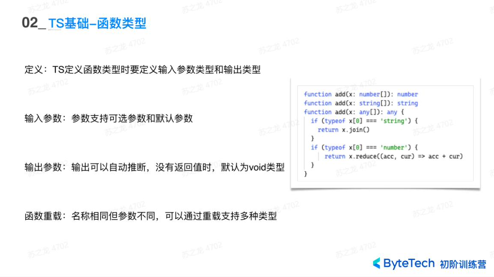
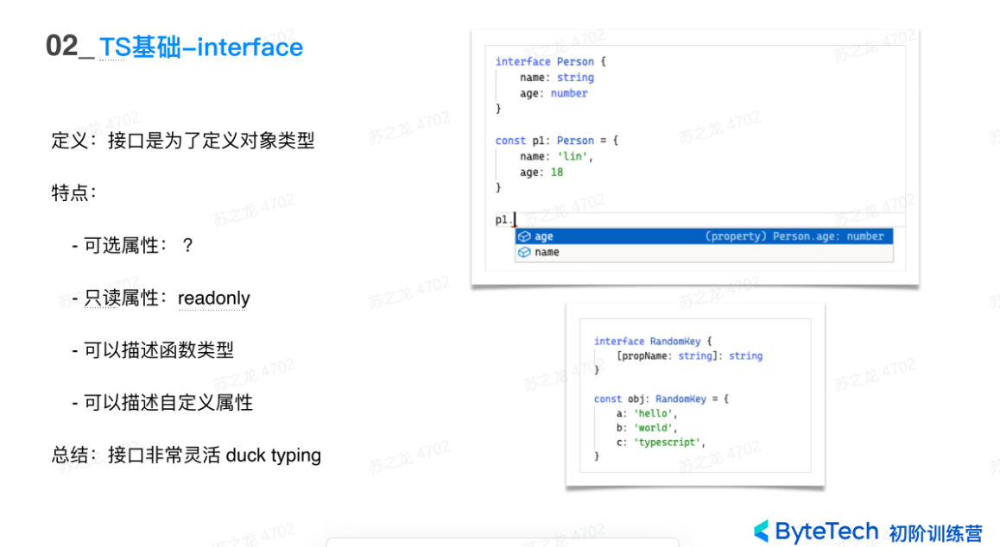
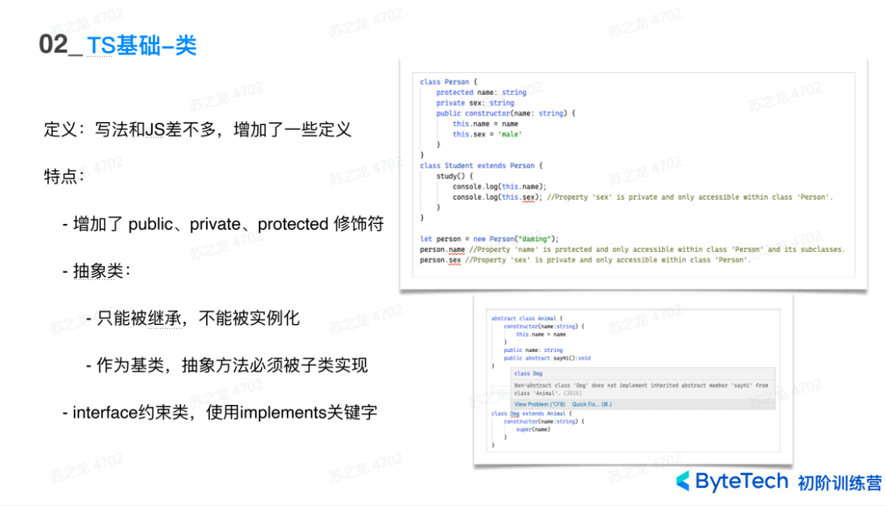
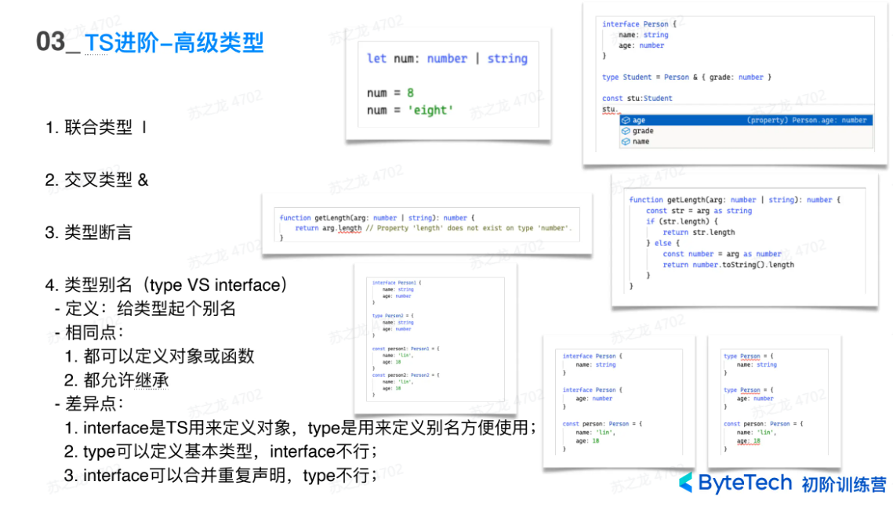
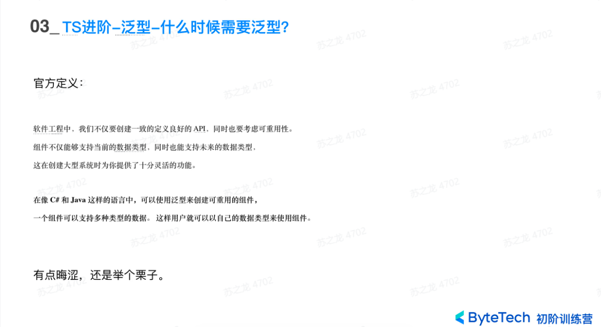
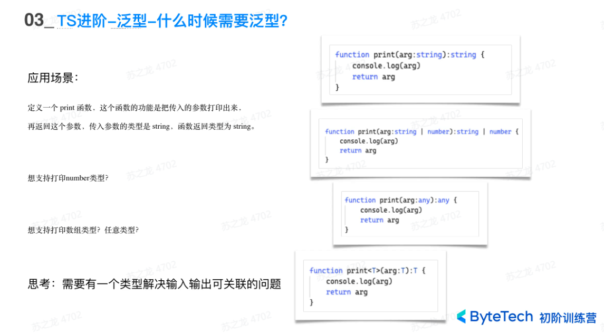
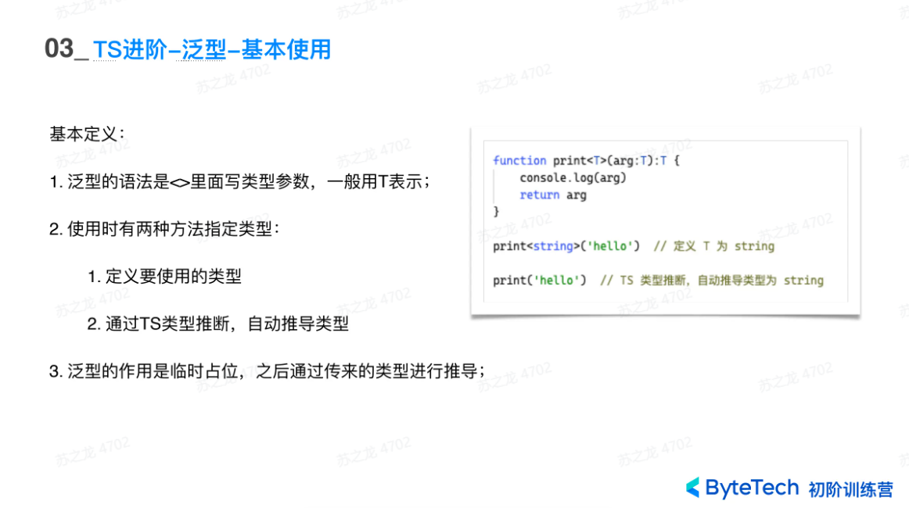
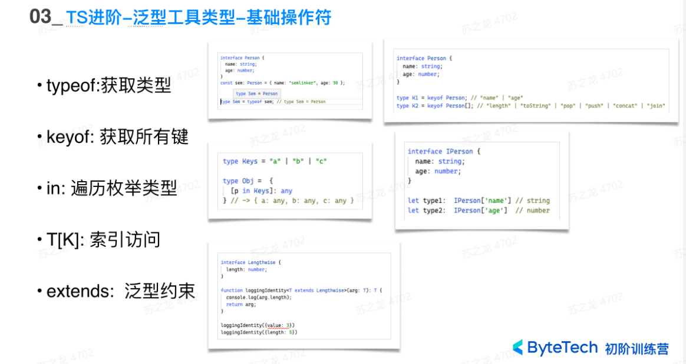
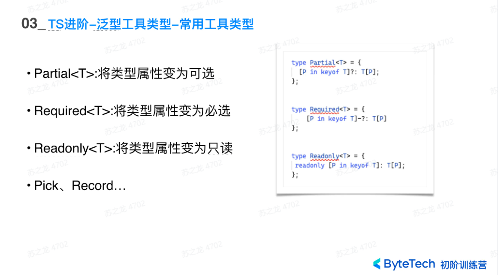
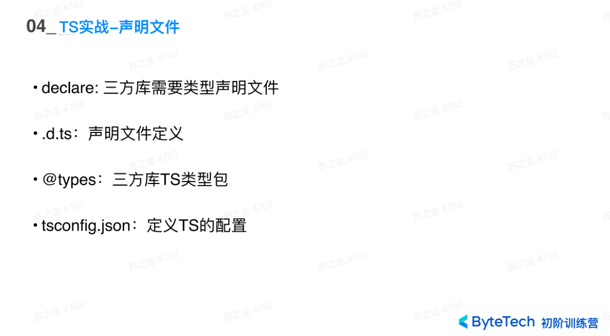
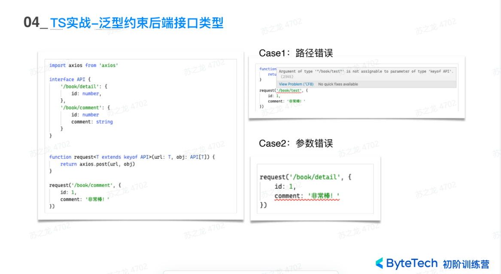
jQuery¶
来自：https://www.liaoxuefeng.com/wiki/1022910821149312/1023022609723552
基础语法¶
选择：
$('选择器')- 返回对象数组
-
使用
$('选择器').find('选择器')进行双层查找 -
选择器：使用
$符号和括号可以选择HTML元素，例如：
$(document) // 选择整个文档对象
$('#myId') // 选择 id="myId" 的元素
$('.myClass') // 选择 class="myClass" 的元素
$('input[type=text]') // 选择所有 type="text" 的 input 元素
- 事件：使用
on()函数来为元素绑定事件处理程序，例如：
$('#myButton').on('click', function() {
alert('Button clicked!');
});
- 操作元素：使用
jQuery提供的函数可以对HTML元素进行操作，例如：
$('#myDiv').html('Hello world!'); // 修改元素内容
$('#myInput').val('default value'); // 设置 input 元素的默认值
$('#myImage').attr('src', 'newimage.jpg'); // 修改元素属性
$('#myDiv').hide(); // 隐藏元素
操作DOM¶
-
jQuery对象的
text()和html()方法分别获取节点的文本和原始HTML文本 -
一个jQuery对象可以包含0个或任意个DOM对象，它的方法实际上会作用在对应的每个DOM节点上。所以jQuery对象的另一个好处是我们可以执行一个操作，作用在对应的一组DOM节点上。即jQuery对象有==“批量操作”==的特点
-
jQuery对象有
css('name', 'value')方法，并且所有jQuery对象的方法的返回值都为jQuery对象
var div = $('#test-div');
div.css('color'); // '#000033', 获取CSS属性
div.css('color', '#336699'); // 设置CSS属性
div.css('color', ''); // 清除CSS属性
- 修改class：
var div = $('#test-div');
div.hasClass('highlight'); // false， class是否包含highlight
div.addClass('highlight'); // 添加highlight这个class
div.removeClass('highlight'); // 删除highlight这个class
- 隐藏和显示DOM
var a = $('a[target=_blank]');
a.hide(time); // 隐藏, time ms内逐渐消失
a.show(); // 显示
a.toggle() //方法则根据当前状态决定是show()还是hide()
slideUp()和slideDown()则是在垂直方向逐渐展开或收缩的,slideToggle()则根据元素是否可见来决定下一步动作
fadeIn()和fadeOut()的动画效果是淡入淡出, fadeToggle()则根据元素是否可见来决定下一步动作
attr()和removeAttr()方法用于操作DOM节点的属性：
// <div id="test-div" name="Test" start="1">...</div>
var div = $('#test-div');
div.attr('data'); // undefined, 属性不存在
div.attr('name'); // 'Test'
div.attr('name', 'Hello'); // div的name属性变为'Hello'
div.removeAttr('name'); // 删除name属性
attr()和prop()对于属性checked处理有所不同:
var radio = $('#test-radio');
radio.attr('checked'); // 'checked'
radio.prop('checked'); // true
radio.is(':checked'); // true
- 对于表单元素，jQuery对象统一提供
val()方法获取和设置对应的value属性,一个val()就统一了各种输入框的取值和赋值的问题
修改DOM结构¶
-
使用
append()方法为DOM对象添加元素 -
除了接受字符串，
append()还可以传入原始的DOM对象，jQuery对象和函数对象：
$('#id').text('阿巴阿巴')
// 创建DOM对象:
var ps = document.createElement('li');
ps.innerHTML = '<span>Pascal</span>';
更改元素内部文本 .text("文本内容")
替换元素内部内容 .html("<标签>内容<标签/>")
// 添加DOM对象:
ul.append(ps);
// 添加jQuery对象:
ul.append($('#scheme'));
// 添加函数对象:
ul.append(function (index, html) {
return '<li><span>Language - ' + index + '</span></li>';
});
-
append()把DOM添加到最后，prepend()则把DOM添加到最前。 -
同级节点可以用
after()或者before()方法。
事件¶
on方法用来绑定一个事件，我们需要传入事件名称和对应的处理函数。
var a = $('#test-link');
a.on('click', function () {
alert('Hello!');
});
- 另一种更简化的写法是直接调用
click()方法：
a.click(function () {
alert('Hello!');
});
- 一个已被绑定的事件可以解除绑定，通过
off('click', function)实现：
为了实现移除效果，可以使用off('click')一次性移除已绑定的click事件的所有处理函数。
同理，无参数调用off()一次性移除已绑定的所有类型的事件处理函数。
// 绑定事件:
a.click(function () {
alert('hello!');
});
// 解除绑定:
a.off('click', function () {
alert('hello!');
});
动画¶
基本
- hide(), show(), toggle()
- slideUp(), slideDown(), slideToggle()
- fadeIn(), fadeOut(), fadeToggle()
自定义动画
- animate ( DOM元素最终的状态，时间，[动画结束时被调用的函数] )
var div = $('#test-animate');
div.animate({
opacity: 0.25,
width: '256px',
height: '256px'
}, 3000); // 在3秒钟内CSS过渡到设定值